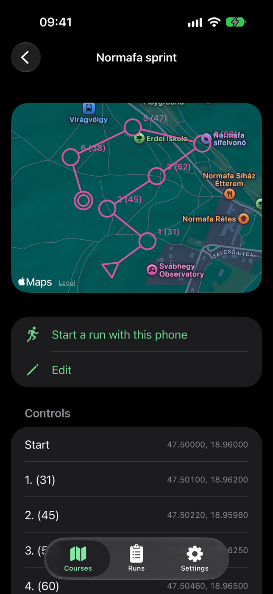
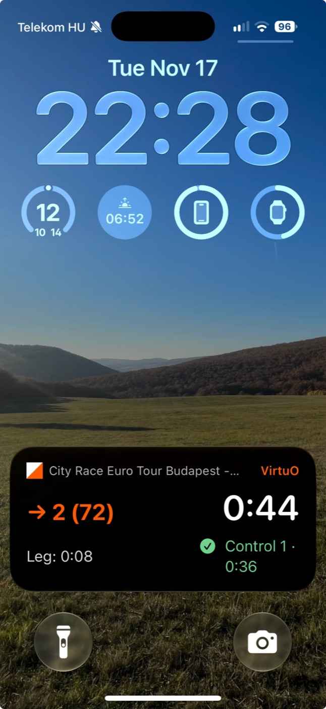
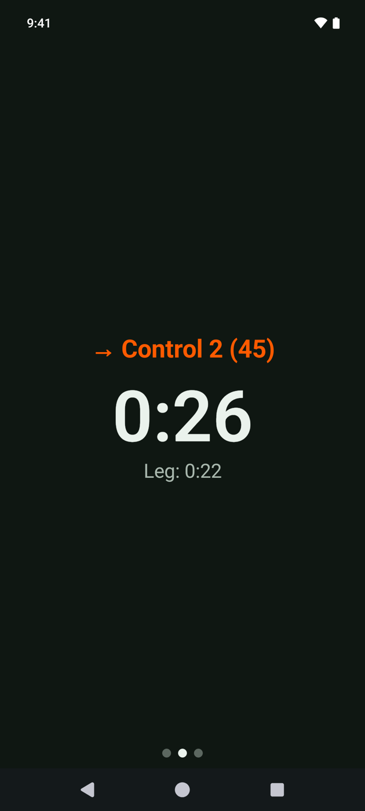

Recorridos de orientación, sin las banderas.
Crea tu propio recorrido o descarga uno desde Livelox. Empiézalo en la app VirtuO, y tu teléfono o tu reloj te avisará cuando llegues a un control. Funciona en iPhone, Apple Watch y Android, con cualquier smartwatch*.

Cómo funciona
Tres pasos y estarás listo para correr.
Prepárate
Carga el recorrido desde Livelox o desde un archivo, o escribe las coordenadas de los controles a mano. También necesitarás un mapa impreso para orientarte.
Empieza a correr
Envía el recorrido a tu reloj, o corre con el teléfono. Pon en marcha el tiempo en el triángulo de salida.
Pica los controles
Cuando entras en el radio del siguiente control, la app vibra, pita y registra tu parcial. Así sustituye a las balizas y a la tarjeta SI.
Funciones
Hecha para entrenar, por un orientador.
Tu teléfono – con o sin smartwatch
Funciona en iPhone y Android: tu teléfono te sigue desde el bolsillo, anuncia cada control y envía una notificación, así que tu smartwatch vibra en cada control*.
App propia para Apple Watch
Números grandes y fáciles de leer mientras corres, vibración potente y un pitido en cada control. Una vez que el recorrido está en el reloj, puedes dejar el teléfono en casa.
Radio ajustable
Por defecto, el control se pica dentro de 15 m. Si el GPS no lo detecta, pícalo a mano.
Ayuda oculta
¿Atascado? Un deslizamiento te muestra la distancia y la dirección al siguiente control.
Parciales e historial
Cada carrera se guarda con sus parciales. Puedes pausar y reanudar.
Registro del entrenamiento en Apple Watch – si lo quieres
En Apple Watch, si está activado, la carrera se guarda como entrenamiento con frecuencia cardíaca, distancia y ruta. Desactivado por defecto.
Repite tus carreras – directamente desde Livelox
Sin archivos que buscar. Inicia sesión con tu cuenta de Livelox, encuentra la prueba, elige tu categoría, y el recorrido ya estará en tu reloj.
Iniciar sesión
Inicias sesión en la propia página de Livelox. VirtuO nunca ve tu contraseña.
Prueba y categoría
Busca la prueba y elige la categoría que quieres correr.
¡Adelante!
El recorrido se descarga con todos sus controles. Repítelo como entrenamiento, a tu propio ritmo.
Solo se descargan los datos públicos de los recorridos. Livelox es una marca de su titular; VirtuO es una app independiente, no un producto de Livelox.
Así se ve
Pantallas de las apps para iPhone, Apple Watch y Android. Desliza para ver más.
iPhone & Apple Watch






Android



Privacidad
En resumen: tus datos se quedan en tus dispositivos.
- Sin cuenta, sin servidor. Los recorridos y las carreras solo se guardan en tu teléfono y en tu reloj.
- Ubicación: el GPS solo se usa durante una carrera, para detectar controles. Tu ubicación nunca se envía a ningún sitio.
- Salud (solo Apple Watch): solo la app del reloj escribe en ella, y únicamente si activas el registro de entrenamientos en los ajustes. La app del iPhone no escribe en ella. No leemos ningún otro dato. En Android no existe esta conexión.
- Livelox: si inicias sesión, solo descargamos datos públicos de los recorridos. Nunca vemos tu contraseña.
- Sin anuncios y sin seguimiento.
Preguntas frecuentes
¿La app muestra un mapa de orientación?
No. Para orientarte necesitas un mapa impreso: imprime el mapa del recorrido y llévatelo contigo. La app solo marca los controles. El mapa de fondo de la vista del recorrido es solo orientativo y no sirve para orientarse.
¿En qué móviles y relojes funciona?
En iPhone y en móviles Android funciona por sí sola. Si tienes un smartwatch que muestra las notificaciones del móvil y vibra con ellas, también avisa ahí. Además, hay una app propia para Apple Watch con la que no necesitas llevar el móvil contigo.
¿Necesito una cuenta o conexión a internet?
No necesitas cuenta de VirtuO. Internet solo hace falta para descargar un recorrido de Livelox. Picar los controles durante la carrera funciona sin internet.
¿Por qué tengo que iniciar sesión en Livelox?
Livelox solo permite descargar recorridos en otras apps a usuarios con sesión iniciada. Basta con una cuenta gratuita de Livelox. El inicio de sesión se hace en la propia web de Livelox; VirtuO nunca ve tu contraseña.